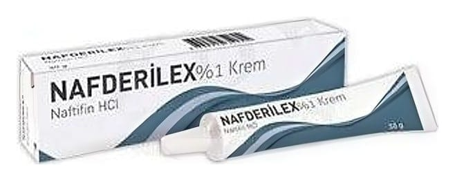

Nafderilex % 1 Krem, 30 Gram

Ne için kullanılır
KT · Bölüm 1NAFDERİLEX naftifin isimli etkin maddeyi içerir ve mantar enfeksiyonlarının harici tedavisinde kullanılır. NAFDERİLEX deri mantarları, maya mantarları, küf mantarları ve diğer mantarlara karşı etkinlik gösterir. NAFDERİLEX aynı zamanda mantar enfeksiyonlarında sıklıkla oluşan farklı birçok bakteriye karşı da etkilidir. NAFDERİLEX’in iltihap giderici etkisi iltihap belirtilerini ve özellikle kaşıntıyı hızla azaltır. NAFDERİLEX karton kutu içerisinde, 15 g ve 30 g’lık alüminyum tüplerde bulunan bir kremdir. NAFDERİLEX deride oluşan aşağıdaki mantar enfeksiyonlarının lokal tedavisinde kullanılır: • Deri veya deri kıvrımlarının mantar enfeksiyonları (kızarıklık, pullanma ve şişkinlik ya da kaşıntılı kabarcıklar olarak görülür)
• Parmak arası mantarları • Tırnaklarda görülen mantar enfeksiyonları • Derinin kandida enfeksiyonları (Candida türlerinin sebep olduğu mantar enfeksiyonu) • Pityriasis versicolor (deri yüzeyindeki bir mantarın aşırı üremesi ile oluşan sık rastlanılan bir deri hastalığı) • İltihaplı deri mantarlarının (kaşıntılı veya kaşıntısız) tedavisi için kullanılır.